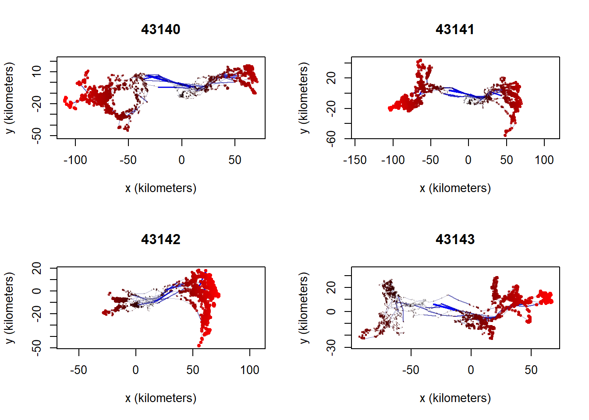
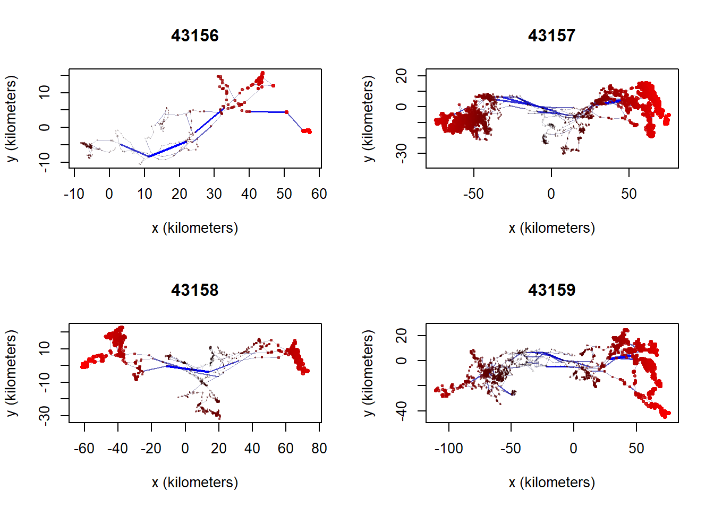
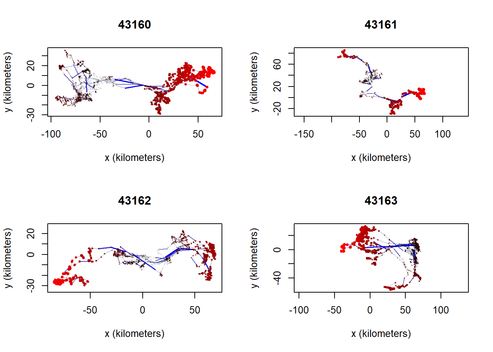

library(sf)
library(ctmm)
library(tidyverse)
# Location of original data on Google drive
ytdir <- "H:/Shared drives/Little Rancheria/Yukon/"Caribou data
Introduction
Objectives:
- Clean YT gps data, remove outliers, create seasonal KDEs
- Read raw collar data and format as movebank data
Read caribou collar data and save to local drive
raw <- st_read(paste0(ytdir, "LRCH_2020-2024_GPSCollar_points.shp"), quiet=TRUE) |>
st_drop_geometry()
write_csv(raw, '../data/yt/raw_data.csv')Read locations and convert to simple features (sf object)
gps <- read.csv('../data/yt/gps.csv') |>
st_as_sf(coords=c('longitude', 'latitude'), crs=4326) |>
st_transform(3578)
st_write(gps, '../data/yt_caribou.gpkg', 'gps', delete_layer=TRUE)Deleting layer `gps' using driver `GPKG'
Writing layer `gps' to data source `../data/yt_caribou.gpkg' using driver `GPKG'
Writing 90864 features with 3 fields and geometry type Point.Convert to movebank-ish format and save
gps <- raw |> select(timestamp, long, lat, tag_ident) |>
rename(longitude=long, latitude=lat, ID=tag_ident)Check that date range is correct
max(gps$timestamp)[1] "2024-03-14 21:17:51"min(gps$timestamp)[1] "2020-11-03 19:19:10"Check for duplicated locations
summary(duplicated(gps)) Mode FALSE
logical 90864 Convert ‘timestamp’ column to Date class to separate seasons
gps <- gps |> mutate(date = as.Date(timestamp))
glimpse(gps)Rows: 90,864
Columns: 5
$ timestamp <chr> "2020-11-06 19:10:39", "2020-11-07 01:07:00", "2020-11-07 07…
$ longitude <dbl> -129.2876, -129.3327, -129.3022, -129.3021, -129.3146, -129.…
$ latitude <dbl> 60.24530, 60.19127, 60.17469, 60.17254, 60.14960, 60.14822, …
$ ID <chr> "43163", "43163", "43163", "43163", "43163", "43163", "43163…
$ date <date> 2020-11-06, 2020-11-07, 2020-11-07, 2020-11-07, 2020-11-07,…Split data into seasons
Selected date ranges
The seasonal date ranges are the same as those initially used for the Klaza and Clear Creek herds (Maegan, personal communication). These should be revisited with regional biologists and revised as necessary.
Code
# Early winter: Oct 21 - Jan 31
ew2020_start <- as.Date("2019-10-21")
ew2020_end <- as.Date("2020-01-31")
ew2021_start <- as.Date("2020-10-21")
ew2021_end <- as.Date("2021-01-31")
ew2022_start <- as.Date("2021-10-21")
ew2022_end <- as.Date("2022-01-31")
ew2023_start <- as.Date("2022-10-21")
ew2023_end <- as.Date("2023-01-31")
ew2024_start <- as.Date("2023-10-21")
ew2024_end <- as.Date("2024-01-31")
# Late winter: Feb 1 - Apr 15
lw2020_start <- as.Date("2020-02-01")
lw2020_end <- as.Date("2020-04-15")
lw2021_start <- as.Date("2021-02-01")
lw2021_end <- as.Date("2021-04-15")
lw2022_start <- as.Date("2022-02-01")
lw2022_end <- as.Date("2022-04-15")
lw2023_start <- as.Date("2023-02-01")
lw2023_end <- as.Date("2023-04-15")
lw2024_start <- as.Date("2024-02-01")
lw2024_end <- as.Date("2024-04-15")
# Summer: June 16 - Sept 14
su2020_start <- as.Date("2020-06-16")
su2020_end <- as.Date("2020-09-14")
su2021_start <- as.Date("2021-06-16")
su2021_end <- as.Date("2021-09-14")
su2022_start <- as.Date("2022-06-16")
su2022_end <- as.Date("2022-09-14")
su2023_start <- as.Date("2023-06-16")
su2023_end <- as.Date("2023-09-14")
su2024_start <- as.Date("2024-06-16")
su2024_end <- as.Date("2024-09-14")
# Fall rut: Sept 15 - Oct 20
fr2020_start <- as.Date("2020-09-15")
fr2020_end <- as.Date("2020-10-20")
fr2021_start <- as.Date("2021-09-15")
fr2021_end <- as.Date("2021-10-20")
fr2022_start <- as.Date("2022-09-15")
fr2022_end <- as.Date("2022-10-20")
fr2023_start <- as.Date("2023-09-15")
fr2023_end <- as.Date("2023-10-20")
fr2024_start <- as.Date("2024-09-15")
fr2024_end <- as.Date("2024-10-20")
# Create new attribute called season
gps <- gps %>%
mutate(
season=case_when(
(date >= ew2020_start & date <= ew2020_end) |
(date >= ew2021_start & date <= ew2021_end) |
(date >= ew2022_start & date <= ew2022_end) |
(date >= ew2023_start & date <= ew2023_end) |
(date >= ew2024_start & date <= ew2024_end) ~ 'earlywinter',
(date >= lw2020_start & date <= lw2020_end) |
(date >= lw2021_start & date <= lw2021_end) |
(date >= lw2022_start & date <= lw2022_end) |
(date >= lw2023_start & date <= lw2023_end) |
(date >= lw2024_start & date <= lw2024_end) ~ 'latewinter',
(date >= su2020_start & date <= su2020_end) |
(date >= su2021_start & date <= su2021_end) |
(date >= su2022_start & date <= su2022_end) |
(date >= su2023_start & date <= su2023_end) |
(date >= su2024_start & date <= su2024_end) ~ 'summer',
(date >= fr2020_start & date <= fr2020_end) |
(date >= fr2021_start & date <= fr2021_end) |
(date >= fr2022_start & date <= fr2022_end) |
(date >= fr2023_start & date <= fr2023_end) |
(date >= fr2024_start & date <= fr2024_end) ~ 'fallrut',
.default = 'other'), date=NULL)Check data
glimpse(gps)Rows: 90,864
Columns: 5
$ timestamp <chr> "2020-11-06 19:10:39", "2020-11-07 01:07:00", "2020-11-07 07…
$ longitude <dbl> -129.2876, -129.3327, -129.3022, -129.3021, -129.3146, -129.…
$ latitude <dbl> 60.24530, 60.19127, 60.17469, 60.17254, 60.14960, 60.14822, …
$ ID <chr> "43163", "43163", "43163", "43163", "43163", "43163", "43163…
$ season <chr> "earlywinter", "earlywinter", "earlywinter", "earlywinter", …Number of locations per season
table(gps$season)
earlywinter fallrut latewinter other summer
30041 7465 20191 13773 19394 Save GPS data with seasons
write_csv(gps, '../data/yt/gps.csv')Check for outliers
Outlier plots: y distance (km) vs x distance (km) for each individual caribou.
par(mfrow=c(2,2))
out = outlie(data = tel, plot = TRUE, by = 'd')





Outlier plot: minimum speed (m/s) vs. median deviation (km) for all caribou individuals.
par(mfrow=c(1,1))
plot(out)